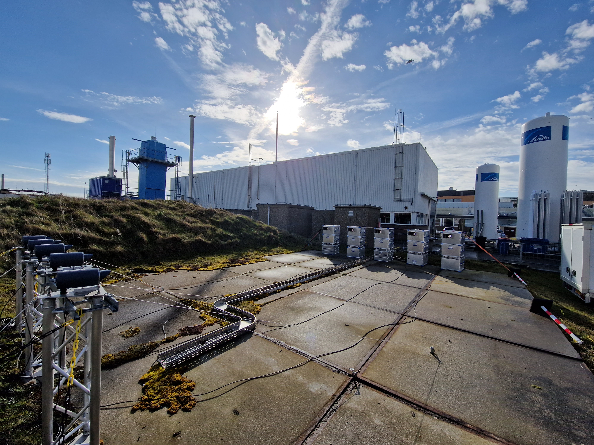

Mini-DOAS
The Mini-DOAS is a miniature version of the Differential Optical Absorption Spectroscopy, allowing to measure atmospheric NH3, NO, and SO2. It is an open-path sensor, thereby overcoming the problem that NH3 sticks to surfaces. We investigate the use of this instrument in the Cabauw measurement tower and in different campaigns at farmhouses.
